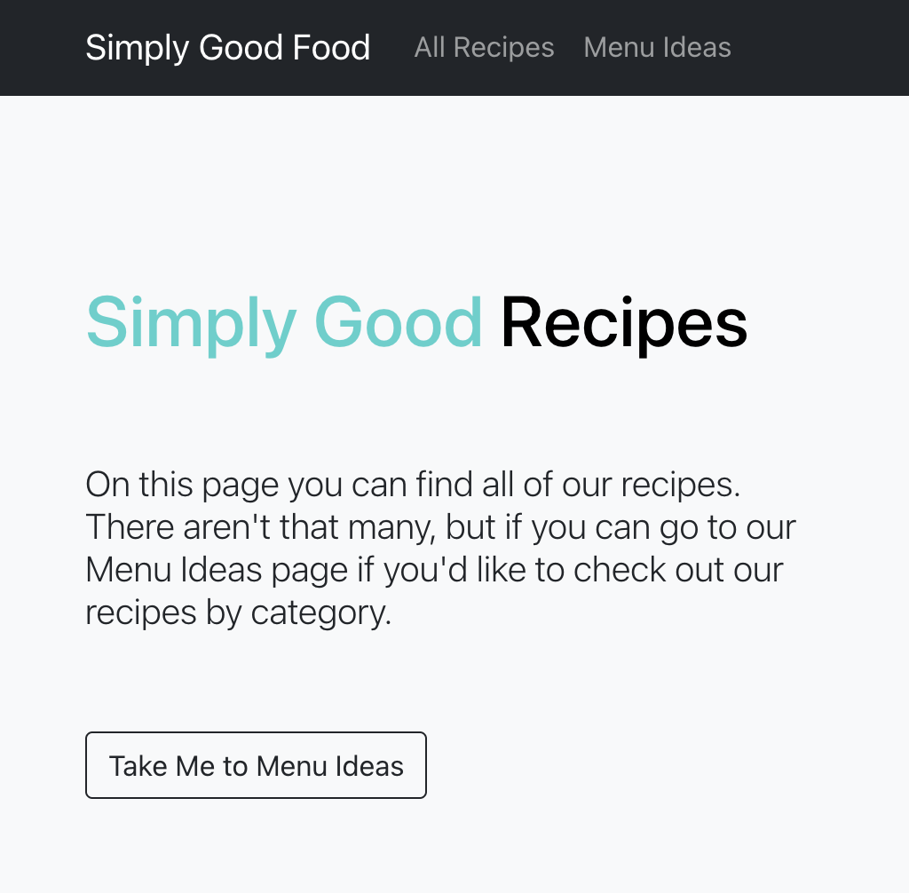
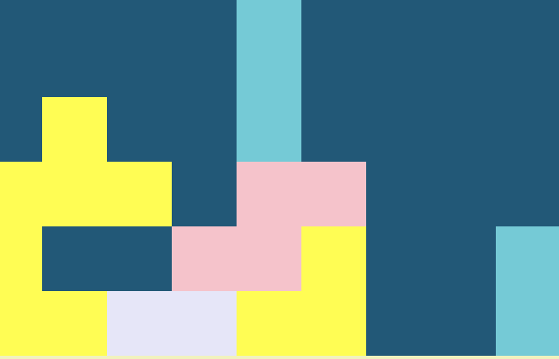

projects
The Community Project
Python Django / React / PostGreSQL

Solo Project – 2 weeks: I built a Python Django REST Framework backend with a React Frontend. I wanted to build a template for friends and potential clients looking to build an online community. I loved working with Python and the Django REST Framework. Still a work in progress, I’m proud of my site’s registration and login functionality.
Simply Good Food
Mongoose / MongoDB / React / Node.js
Group Project (2 people) – 2 weeks: Full-Stack MERN app with CRUD functionality that uses an MVC pattern. We made a clone of the Minimalist Baker website. Among my responsibilities were setting up initial backend API controllers and routes, initiating import of data into our database, and establishing the routes through our React frontend. I took the lead in deploying both our frontend on Netlify and back end on Heroku as well as made many of the project’s styling decisions. I’m proud of the Boot-React Carousel I effectively implemented.
The LSS (Local Space Station)
JavaScript / React / Insomnia

Solo Project – 2 weeks: I built a Python Django REST Framework backend with a React Frontend. I wanted to build a template for friends and potential clients looking to build an online community. I loved working with Python and the Django REST Framework. Still a work in progress, I’m proud of my site’s registration and login functionality.
Tetris 2.022
HTML / CSS / Vanilla JavaScript
Group Project (3 people) – 1 week: React App that consumes an API. Our app is a Space Calendar that uses the React Calendar Library and consumes NASA’s image of the day API. The takeaway from this project was coding with others and working in the same GitHub repo. I personally used this project to explore JavaScript dates, the Bulma styling library, and was the team member responsible for deploying our app. This game does not work on mobile devices, so check it out on a larger screen.